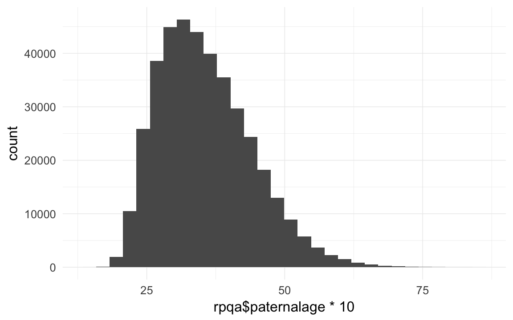
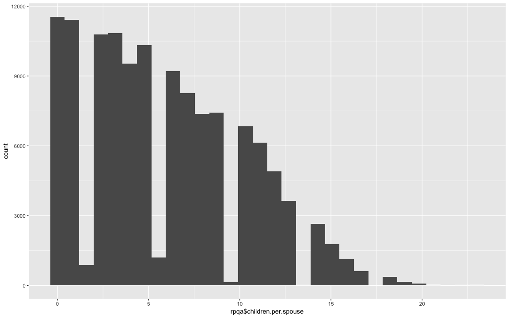
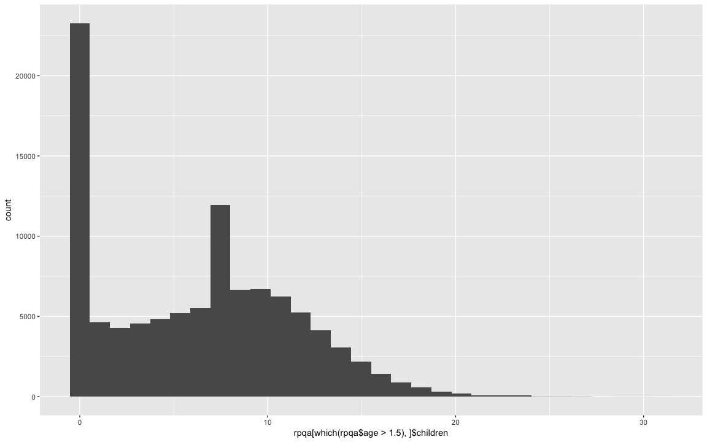
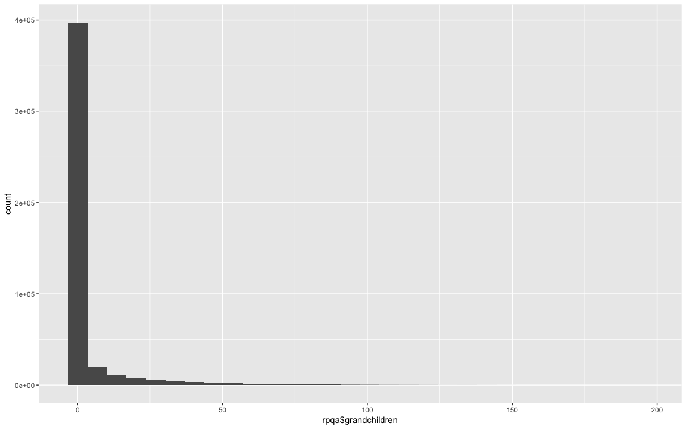
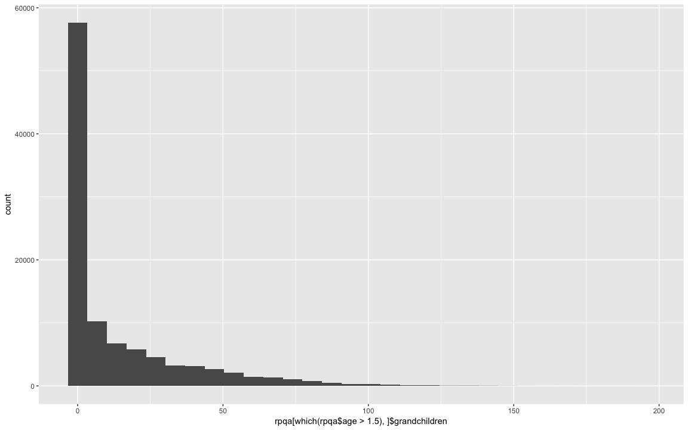
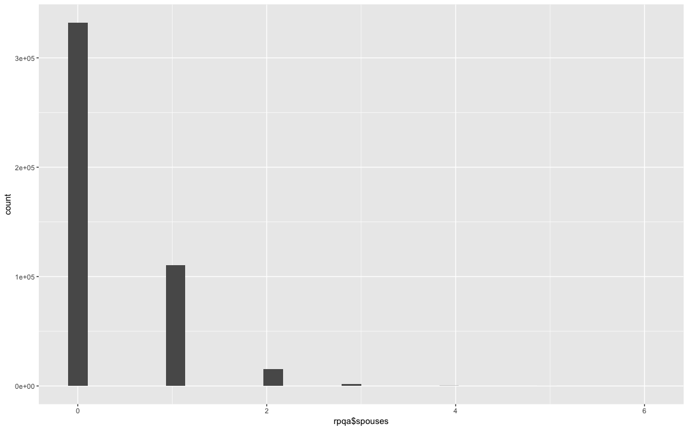
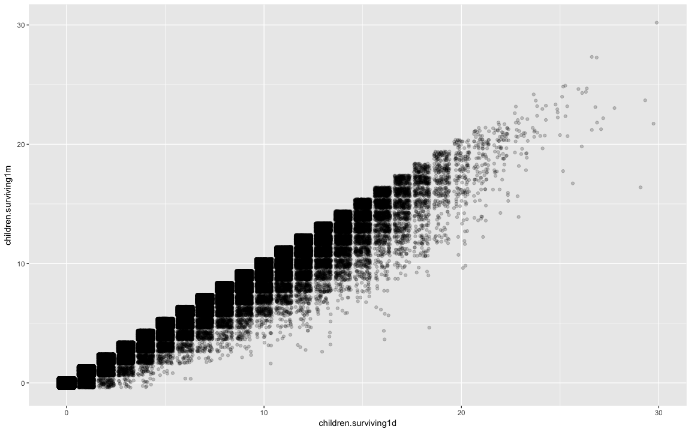
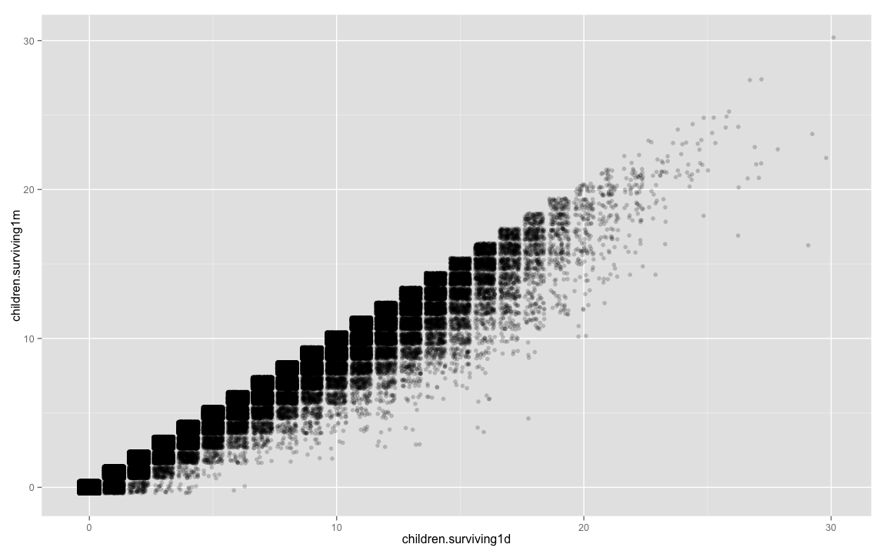
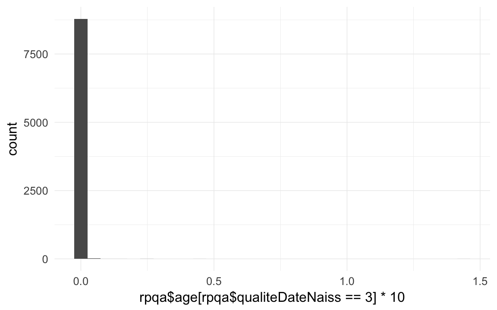
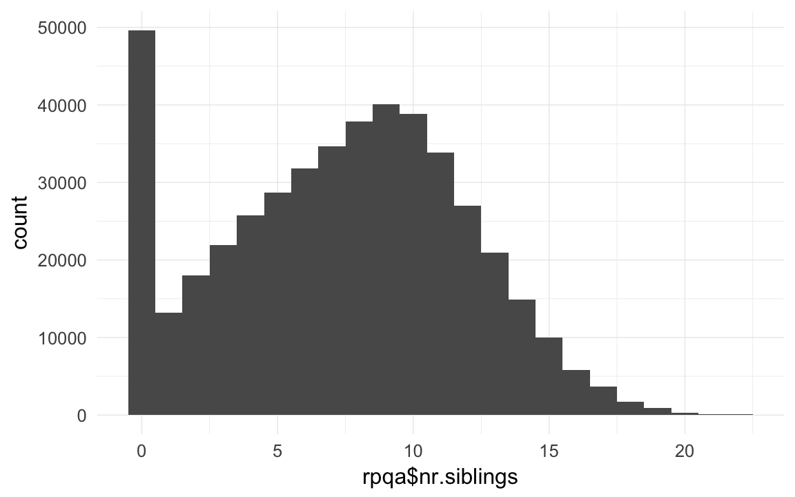

RPQA Data wrangling
description of data
Data from the « Registre de la Population du Québec Ancien » of the Programme de Recherche en Démographie Historique, Demography Department, Université de Montréal
January 2012
The data is «Family reconstitution data» based on the systematic transcription of names, place and dates of catholic Baptisms, Marriages and Burials registered in Quebec for the period 1621-1799. Data also include death information of the 1800-1850 for people born before 1750. There are two distinct numerotations: one for couples, one for individuals.
The data is presented in two files:
1- A couple’s file, giving for each couple
- its id number and the id numbers of the spouses
- a date followed by a one digit code (1= marriage date; 2 = marriage contract date, used to replace missing marriage date, contracts being normally signed a few days before the actual marriage; 4 = first mention of the couple in the documents (baptism of a child, remarriage of a spouse, etc.); the couple can have married outside Quebec and migrated in, or it can be a couple formed in Quebec for which the marriage was lost and no contract found to replace)
- a place: parish were the marriage was celebrated, “000” if a marriage contract (meaning somewhere in Quebec), or a place outside Quebec or no place at all)
2- A file of individuals, giving for each:
- Id number and id numbers of parents
- A code of one’s ethnic origin (for certain immigrants: 911 = German, 795 = born in USA, 901 = British, 794 = “English” (American or British)
- A flag identifying Indians
- A flag identifying Immigrants (= anyone born outside Quebec; mostly born in France but could be born out West (fur trading country) from Quebec parents…
- A flag identifying those having died outside Quebec (out-migrants)
- Date of birth, followed by a one digit code (1 = date of birth; 2 = date of baptism, can be used as equivalent to date of birth), = 3 or 4: child died soon after birth, before having received formal baptism; = 5 or 6: approximate year of birth, usually from an age declaration; = 7 missing info
- Place of birth: usually parish of baptism
- Date of death, followed by a one digit code (1 = date of death; 2 = date of burial; 3 or 4 = date found from another source; 5 = missing info)
- Place of death: normally: parish of burial
- Flag identifying among those who married those who could sign (= 1) and those who could not (= 2)
For all place codes: numbers from 0000 to 6909 correspond to Quebec parishes. 3901 = Montreal; 4501 = Quebec city; 6001 = Trois-Rivieres. They are the only urban areas, with Trois-Rivieres being more a village than a town. The Administration and the merchants and such lived either in Montreal or Quebec. All other parishes are rural. 5 digit codes (10011…) correspond to places in France. 7801 to 789 to areas out West (“Pays-d’en-Haut”, outposts for military reasons and fur trade).
Loading details
rm(list=ls());
library(foreign); library(Hmisc); library(car); library(psych); library(QuantPsyc); library(ggplot2); library(lubridate); library(stringr); library(reshape2); library(plyr); library(knitr); library(data.table)
opts_chunk$set(cache=F,tidy=FALSE,autodep=TRUE,fig.width=12,fig.height=7.5)
miss.frac = function(df,vars=1:ncol(df)) { round(colSums(plyr::colwise(is.na)(df[,vars]))/nrow(df),2) } # missing fraction
# rpqa_fam
# gebkk 1, 2 gebfk, gebmk. 1 datum genau bekannt, 2 = 15. juni eines jahrs, jahrgenau
# rpqa_unions # alle ehen
# unbekanntes schicksal = Nbirth - infantD/1y - childD/1-15y - adultD/15+
#eheF == 1 und eheM == 1 erstehen
# auswahl_id_f == alle ehen der frau, vv
# ehebekannt: kennen anfang und ende der ehe, bei ehebekannt==1 mehr geburten pro ehe
# 1670-1750Transforming data
rpqa.individuals = read.dta("data/RPQA_29Oct2014/RPQA-family.dta")
rpqa.unions = read.dta("data/RPQA_29Oct2014/RPQA-union4.dta")
rpqa.unions$idParents = str_c(rpqa.unions$id_m, '_', rpqa.unions$id_f)
rpqa.unions$idParents[which(rpqa.unions$idParents=="NA_NA")] = NA
rpqa.individuals$idParents = str_c(rpqa.individuals$idPere, '_', rpqa.individuals$idMere)
rpqa.individuals$idParents[which(rpqa.individuals$idParents=="NA_NA")] = NA
# tail(na.omit(rpqa.individuals$idParents[which(is.na(rpqa.individuals$idMere))]))
library(formr)
moms = rpqa.unions[!is.na(rpqa.unions$auswahl_id_f),c('id_f',names(rpqa.unions)[names(rpqa.unions) %ends_with% "_id_f"])]
dads = rpqa.unions[!is.na(rpqa.unions$auswahl_id_m),c('id_m',names(rpqa.unions)[names(rpqa.unions) %ends_with% "_id_m"])]
names(dads) = str_sub(names(dads),1,-6); names(dads)[1] = "id"
names(moms) = str_sub(names(moms),1,-6); names(moms)[1] = "id"
dads = dads[, names(moms)]
spouses = rbind(dads,moms)
rpqa = rpqa.individuals
rpqa$immigrant = factor(rpqa$immigrant,levels=c(0,1),labels=c('NO',''))
rpqa$emigrant = factor(rpqa$emigrant,levels=c(0,1),labels=c('NO',''))
rpqa$amerindien = factor(rpqa$amerindien,levels=c(0,1),labels=c('NO',''))
rpqa$sexe = Recode(rpqa$sexe,"'M'='m';'x'=NA")
rpqa$male = ifelse(rpqa$sexe == 'm',1,0)
library(lubridate)
rpqa$bdate = as.Date(rpqa$gebk)
rpqa$byear = year(rpqa$bdate)
rpqa$ddate = as.Date(rpqa$todk)
rpqa$dyear = year(rpqa$ddate)
rpqa$bdate.Father = as.Date(rpqa$gebm)
rpqa$byear.Father = year(rpqa$bdate.Father)
rpqa$ddate.Father = as.Date(rpqa$todm)
rpqa$dyear.Father = year(rpqa$ddate.Father)
rpqa$bdate.Mother = as.Date(rpqa$gebf)
rpqa$byear.Mother = year(rpqa$bdate.Mother)
rpqa$ddate.Mother = as.Date(rpqa$todf)
rpqa$dyear.Mother = year(rpqa$ddate.Mother)
rpqa$age.days = as.numeric(rpqa$ddate - rpqa$bdate)
# head(data.frame(as.numeric(rpqa$ddate - rpqa$bdate)/365, rpqa$ddate, rpqa$bdate))
rpqa$age.days.Father = as.numeric(rpqa$ddate.Father - rpqa$bdate.Father)
rpqa$age.days.Mother = as.numeric(rpqa$ddate.Mother - rpqa$bdate.Mother)
rpqa$age = rpqa$age.days / 365/10
qplot(rpqa$age * 10)## stat_bin: binwidth defaulted to range/30. Use 'binwidth = x' to adjust this.
qplot(rpqa$age * 10)+xlim(0.1,NA)## stat_bin: binwidth defaulted to range/30. Use 'binwidth = x' to adjust this.
# qplot(rpqa.individuals$age.days)
rpqa$paternalage = as.numeric(rpqa$bdate - rpqa$bdate.Father)/365/10
qplot(rpqa$paternalage *10)## stat_bin: binwidth defaulted to range/30. Use 'binwidth = x' to adjust this.
head(sort(rpqa$paternalage *10),20)## [1] 14.84 15.05 15.47 15.90 15.92 15.92 16.01 16.01 16.13 16.18 16.30
## [12] 16.33 16.35 16.45 16.45 16.52 16.57 16.60 16.60 16.61tail(sort(rpqa$paternalage *10),20)## [1] 78.92 79.98 80.00 80.00 80.76 80.87 81.08 81.18 81.20 81.76 81.91
## [12] 81.99 82.00 82.69 83.04 83.43 83.46 84.79 85.20 85.44rpqa$maternalage = as.numeric(rpqa$bdate - rpqa$bdate.Mother)/365/10
qplot(rpqa$maternalage *10)## stat_bin: binwidth defaulted to range/30. Use 'binwidth = x' to adjust this.
table(rpqa$age.Mother < (rpqa$maternalage - 0.1)) # zombie moms## < table of extent 0 >table(rpqa$age.Father < (rpqa$paternalage - 0.1)) # zombie dads## < table of extent 0 >head(sort(rpqa$maternalage *10),20) # 9y old may be possible## [1] 9.953 12.008 12.482 13.008 13.049 13.140 13.156 13.238 13.247 13.247
## [11] 13.299 13.337 13.381 13.405 13.408 13.441 13.458 13.510 13.559 13.581tail(sort(rpqa$maternalage *10),40) # but 69y old. something wrong with that.## [1] 51.01 51.03 51.04 51.05 51.09 51.16 51.24 51.40 51.56 51.62 51.63
## [12] 51.72 51.72 51.92 52.03 52.12 52.12 52.16 52.35 52.35 52.38 52.49
## [23] 52.85 52.92 53.03 53.23 53.60 54.35 54.73 54.85 54.90 55.03 55.04
## [34] 55.68 55.93 56.04 56.70 57.58 59.60 69.27qplot(maternalage*10,paternalage*10,data=rpqa,geom="jitter",alpha=I(0.1),shape=I(".")) + xlim(12,50) + geom_smooth()## geom_smooth: method="auto" and size of largest group is >=1000, so using gam with formula: y ~ s(x, bs = "cs"). Use 'method = x' to change the smoothing method.## Warning: Removed 70024 rows containing missing values (stat_smooth).## Warning: Removed 70024 rows containing missing values (geom_point).
cor.test(rpqa$maternalage,rpqa$paternalage)##
## Pearson's product-moment correlation
##
## data: rpqa$maternalage and rpqa$paternalage
## t = 510.1, df = 389608, p-value < 2.2e-16
## alternative hypothesis: true correlation is not equal to 0
## 95 percent confidence interval:
## 0.6309 0.6346
## sample estimates:
## cor
## 0.6328xtabs(~ is.na(idMere) + is.na(idPere), data = rpqa.individuals)## is.na(idPere)
## is.na(idMere) FALSE TRUE
## FALSE 427016 509
## TRUE 265 31801rpqa = merge(rpqa, spouses, by.x = "idIndividu",by.y="id", all.x =T)
# rpqa[which(rpqa$children==11 & rpqa$Nbirths == 1), ]
# rpqa[which(rpqa$children==11 & rpqa$Nbirths == 10), c('idIndividu','sexe', 'children','Nbirths')]
# rpqa[which(rpqa$children==11 & rpqa$Nbirths == 10), c('idIndividu','sexe', 'children','Nbirths')]
# rpqa[which(rpqa$children==11 & rpqa$Nbirths == 10), c('idIndividu','sexe', 'children','Nbirths')]
#
# length(setdiff(spouses$id, rpqa$idIndividu))
# length(setdiff(rpqa$idIndividu,spouses$id))
# table(rpqa$children==rpqa$Nbirths)
# rpqa.unions[which(rpqa.unions$id_f==90955),]
# rpqa.unions[which(rpqa.unions$id_m==159925),]
# spouses[which(spouses$id==90955),]
# rpqa.unions[which(rpqa.unions$id==90774),]
# rpqa[which(rpqa$idMere == 90955), ]
# rpqa[which(rpqa$idPere == 159925), ]
# rpqa[which(rpqa$idIndividu == 90403), ]
#
# rpqa[which(rpqa$idPere == 90774), ]
# rpqa.unions[which(rpqa.unions$id_m==90774), ]
#
# sum(rpqa$children[rpqa$children!=rpqa$Nbirths],na.rm=T)
# qplot(rpqa$children[rpqa$children!=rpqa$Nbirths])count kids and spouses
count_and_merge = function(df, what, wt_var) {
library(reshape2)
counted.dad = dcast(data= df[,c('idPere',wt_var)],formula = idPere ~ .,fun.aggregate = sum, na.rm=T,value.var = wt_var)
counted.mom = dcast(data= df[,c('idMere',wt_var)],formula = idMere ~ .,fun.aggregate = sum, na.rm=T, value.var = wt_var)
names(counted.dad) = names(counted.mom) = c('idIndividu',what)
counted = rbind(counted.dad,counted.mom)
df = merge(df,counted,by='idIndividu',all.x=T)
df[,what] = Recode(df[,what],'NA=0')
df
}
# tail(rpqa.unions) # already sorted by date
#df = rpqa[which(rpqa$idPere==59192 | rpqa$idIndividu==59192),]
#count_and_merge(df,"children.surviving1d",survive1d)[,c('idIndividu',"children.surviving1d",'survive1d')]
# df$survive1d[is.na(df$survive1d)] = 0
#plyr::count(df,vars='idPere',wt_var="survive1d")
#ddply(df, .(idPere), summarise, survive1d = sum(survive1d, na.rm=T))
rpqa.unions = rpqa.unions[order(rpqa.unions$id_m,rpqa.unions$dat),]
rpqa.unions$marriage.order.Father = ave(rep(NA, nrow(rpqa.unions)), rpqa.unions$id_m, FUN = seq_along)
rpqa.unions = rpqa.unions[order(rpqa.unions$id_f,rpqa.unions$dat),]
rpqa.unions$marriage.order.Mother = ave(rep(NA, nrow(rpqa.unions)), rpqa.unions$id_f, FUN = seq_along)
rpqa = merge(rpqa, rpqa.unions[,c('idParents','marriage.order.Mother','marriage.order.Father'),],by="idParents",all.x=T)
rpqa = merge(rpqa, rpqa.unions[,c('idParents','ehebekannt'),],by="idParents",all.x=T)
rpqa$ehebekannt = ifelse(is.na(rpqa$ehebekannt), 0, 1)
rpqa$first.marriage = (rpqa$marriage.order.Mother + rpqa$marriage.order.Father) == 2
table(rpqa$first.marriage,exclude=NULL)##
## FALSE TRUE <NA>
## 63206 350838 45547count_spouses = function(df, df2, what, wt_var) {
counted.husband = dcast(data= df2[,c('id_m',wt_var)],formula = id_m ~ .,fun.aggregate = sum, na.rm=T, value.var = wt_var)
counted.wive = dcast(data= df2[,c('id_f',wt_var)],formula = id_f ~ .,fun.aggregate = sum, na.rm=T, value.var = wt_var)
names(counted.husband) = names(counted.wive) = c('idIndividu',what)
counted = rbind(counted.husband,counted.wive)
df = merge(df,counted,by='idIndividu',all.x=T)
df[,what] = Recode(df[,what],'NA=0')
df
}
rpqa$born = 1; rpqa.unions$born = 1
rpqa = count_spouses(rpqa,rpqa.unions, 'spouses', "born")
rpqa$survive1d = ifelse(rpqa$age.days > 1, 1, 0)
rpqa$survive1m = ifelse(rpqa$age.days > 28, 1, 0)
rpqa$dead1d = ifelse(rpqa$age.days <= 1, 1, 0)
rpqa$dead1m = ifelse(rpqa$age.days > 28, 0, 1)
rpqa$dead1y = ifelse(rpqa$age > 0.1, 0, 1)
rpqa$dead5y = ifelse(rpqa$age > 0.5, 0, 1)
rpqa$deadR = ifelse(rpqa$age > 1.5, 0, 1)
rpqa$survive5y = ifelse(rpqa$age > 0.5, 1, 0)
rpqa$survive1y = ifelse(rpqa$age > 0.1, 1, 0)
rpqa$surviveR = ifelse(rpqa$age > 1.5, 1, 0)
# rpqa$survive1m = Recode(rpqa$survive1m, 'NA=0')
table(rpqa$survive1m,exclude=NULL)##
## 0 1 <NA>
## 41499 198139 219953rpqa = count_and_merge(rpqa, 'children', wt_var = "born")
xtabs(~ children + Nbirths, data = rpqa)## Nbirths
## children 1 2 3 4 5 6 7 8 9 10 11
## 1 10692 0 0 0 0 0 0 0 0 0 0
## 2 61 9368 0 0 0 0 0 0 0 0 0
## 3 17 71 9240 0 0 0 0 0 0 0 0
## 4 7 8 59 8806 0 0 0 0 0 0 0
## 5 2 6 10 66 8562 0 0 0 0 0 0
## 6 2 4 1 13 61 8319 0 0 0 0 0
## 7 2 2 2 5 9 60 8096 0 0 0 0
## 8 0 0 1 1 2 9 55 8119 0 0 0
## 9 0 3 0 1 3 4 8 43 8204 0 0
## 10 1 0 0 0 0 0 3 7 51 7961 0
## 11 1 0 0 0 0 1 2 2 3 48 7253
## 12 0 0 1 0 0 1 0 0 1 7 38
## 13 0 0 0 0 0 1 0 0 2 0 2
## 14 0 0 0 0 0 0 1 0 0 1 1
## 15 0 0 0 0 0 0 0 0 0 0 0
## 16 0 0 0 0 0 0 0 0 0 0 0
## 17 0 0 0 0 0 0 0 0 0 0 0
## 18 0 0 0 0 0 0 0 0 0 0 0
## 19 0 0 0 0 0 0 0 0 0 0 0
## 20 0 0 0 0 0 0 0 0 0 0 0
## 21 0 0 0 0 0 0 0 0 0 0 0
## 22 0 0 0 0 0 0 0 0 0 0 0
## 23 0 0 0 0 0 0 0 0 0 0 0
## 24 0 0 0 0 0 0 0 0 0 0 0
## 25 0 0 0 0 0 0 0 0 0 0 0
## 26 0 0 0 0 0 0 0 0 0 0 0
## 27 0 0 0 0 0 0 0 0 0 0 0
## 29 0 0 0 0 0 0 0 0 0 0 0
## 30 0 0 0 0 0 0 0 0 0 0 0
## 31 0 0 0 0 0 0 0 0 0 0 0
## Nbirths
## children 12 13 14 15 16 17 18 19 20 21 22
## 1 0 0 0 0 0 0 0 0 0 0 0
## 2 0 0 0 0 0 0 0 0 0 0 0
## 3 0 0 0 0 0 0 0 0 0 0 0
## 4 0 0 0 0 0 0 0 0 0 0 0
## 5 0 0 0 0 0 0 0 0 0 0 0
## 6 0 0 0 0 0 0 0 0 0 0 0
## 7 0 0 0 0 0 0 0 0 0 0 0
## 8 0 0 0 0 0 0 0 0 0 0 0
## 9 0 0 0 0 0 0 0 0 0 0 0
## 10 0 0 0 0 0 0 0 0 0 0 0
## 11 0 0 0 0 0 0 0 0 0 0 0
## 12 5946 0 0 0 0 0 0 0 0 0 0
## 13 30 4557 0 0 0 0 0 0 0 0 0
## 14 2 23 3373 0 0 0 0 0 0 0 0
## 15 0 1 18 2349 0 0 0 0 0 0 0
## 16 1 0 2 14 1543 0 0 0 0 0 0
## 17 0 0 0 0 4 959 0 0 0 0 0
## 18 0 1 0 0 1 2 633 0 0 0 0
## 19 0 0 0 0 0 1 1 337 0 0 0
## 20 0 0 0 0 0 0 0 0 203 0 0
## 21 0 0 0 0 0 0 0 0 1 102 0
## 22 0 0 0 0 0 0 0 0 0 0 72
## 23 0 0 0 0 0 0 0 0 0 0 0
## 24 0 0 0 0 0 0 0 0 0 0 0
## 25 0 0 0 0 0 0 0 0 0 0 0
## 26 0 0 0 0 0 0 0 0 0 0 0
## 27 0 0 0 0 0 0 0 0 0 0 0
## 29 0 0 0 0 0 0 0 0 0 0 0
## 30 0 0 0 0 0 0 0 0 0 0 0
## 31 0 0 0 0 0 0 0 0 0 0 0
## Nbirths
## children 23 24 25 26 27 29 30 31
## 1 0 0 0 0 0 0 0 0
## 2 0 0 0 0 0 0 0 0
## 3 0 0 0 0 0 0 0 0
## 4 0 0 0 0 0 0 0 0
## 5 0 0 0 0 0 0 0 0
## 6 0 0 0 0 0 0 0 0
## 7 0 0 0 0 0 0 0 0
## 8 0 0 0 0 0 0 0 0
## 9 0 0 0 0 0 0 0 0
## 10 0 0 0 0 0 0 0 0
## 11 0 0 0 0 0 0 0 0
## 12 0 0 0 0 0 0 0 0
## 13 0 0 0 0 0 0 0 0
## 14 0 0 0 0 0 0 0 0
## 15 0 0 0 0 0 0 0 0
## 16 0 0 0 0 0 0 0 0
## 17 0 0 0 0 0 0 0 0
## 18 0 0 0 0 0 0 0 0
## 19 0 0 0 0 0 0 0 0
## 20 0 0 0 0 0 0 0 0
## 21 0 0 0 0 0 0 0 0
## 22 0 0 0 0 0 0 0 0
## 23 49 0 0 0 0 0 0 0
## 24 0 29 0 0 0 0 0 0
## 25 0 0 14 0 0 0 0 0
## 26 0 0 1 12 0 0 0 0
## 27 0 0 0 1 9 0 0 0
## 29 0 0 0 0 0 2 0 0
## 30 0 0 0 0 0 0 3 0
## 31 0 0 0 0 0 0 0 1# tail(rpqa[rpqa$children!=rpqa$Nbirths,])
table(rpqa$children==rpqa$Nbirths)##
## FALSE TRUE
## 877 114813cor.test(rpqa$children,rpqa$Nbirths)##
## Pearson's product-moment correlation
##
## data: rpqa$children and rpqa$Nbirths
## t = 10136, df = 115688, p-value < 2.2e-16
## alternative hypothesis: true correlation is not equal to 0
## 95 percent confidence interval:
## 0.9994 0.9994
## sample estimates:
## cor
## 0.9994qplot(rpqa$children,rpqa$Nbirths, geom="jitter")## Warning: Removed 343901 rows containing missing values (geom_point).
qplot(rpqa$Nbirths,rpqa$children, geom = "jitter")## Warning: Removed 343901 rows containing missing values (geom_point).rpqa$children.per.spouse = rpqa$children/rpqa$spouses
rpqa$children.per.spouse[which(rpqa$spouses==0)] = NA
qplot(rpqa$children.per.spouse)## stat_bin: binwidth defaulted to range/30. Use 'binwidth = x' to adjust this.
# well we know that people who reproduced or married usually made 15
changeNAto1 = function(x) { colwise(function(x) { ifelse(is.na(x), 1, x)})(x) }
rpqa[which(rpqa$children>0 | rpqa$spouses>0), c('surviveR', 'survive1y', 'survive1m', 'survive1d')] = changeNAto1(rpqa[which(rpqa$children>0 | rpqa$spouses>0), c('surviveR', 'survive1y', 'survive1m', 'survive1d')])
rpqa = count_and_merge(rpqa, 'children.dead1d', wt_var = 'dead1d')
rpqa$children.surviving1d = rpqa$children - rpqa$children.dead1d
rpqa = count_and_merge(rpqa, 'children.dead1m', wt_var = 'dead1m')
rpqa$children.surviving1m = rpqa$children - rpqa$children.dead1m
rpqa = count_and_merge(rpqa, 'children.dead1y', wt_var = 'dead1y')
rpqa$children.surviving1y = rpqa$children - rpqa$children.dead1y
# xtabs(~ rpqa$children.dead1y + rpqa$NinfantD, exclude = NULL, na.action = na.pass)
rpqa = count_and_merge(rpqa, 'children.dead5y', wt_var = 'dead5y')
rpqa$children.surviving5y = rpqa$children - rpqa$children.dead5y
rpqa = count_and_merge(rpqa, 'children.deadR', wt_var = 'deadR')
rpqa$children.survivingR = rpqa$children - rpqa$children.deadR
table(rpqa$children.deadR - rpqa$children.dead1y == rpqa$NchildD)##
## FALSE TRUE
## 85 115605xtabs(~ I(rpqa$children.deadR - rpqa$children.dead1y) + rpqa$NchildD, exclude = NULL, na.action = na.pass)## rpqa$NchildD
## I(rpqa$children.deadR - rpqa$children.dead1y) 0 1 2 3
## 0 65429 4 0 0
## 1 34 29207 9 0
## 2 4 20 13044 1
## 3 0 2 4 5112
## 4 0 0 1 1
## 5 0 0 0 0
## 6 0 0 0 0
## 7 0 0 0 0
## 8 0 0 0 0
## 9 0 0 0 0
## 10 0 0 0 0
## rpqa$NchildD
## I(rpqa$children.deadR - rpqa$children.dead1y) 4 5 6 7
## 0 0 0 0 0
## 1 0 0 0 0
## 2 0 0 0 0
## 3 0 0 0 0
## 4 1906 0 0 0
## 5 4 625 0 0
## 6 0 1 211 0
## 7 0 0 0 51
## 8 0 0 0 0
## 9 0 0 0 0
## 10 0 0 0 0
## rpqa$NchildD
## I(rpqa$children.deadR - rpqa$children.dead1y) 8 9 10 <NA>
## 0 0 0 0 343718
## 1 0 0 0 149
## 2 0 0 0 21
## 3 0 0 0 8
## 4 0 0 0 3
## 5 0 0 0 2
## 6 0 0 0 0
## 7 0 0 0 0
## 8 16 0 0 0
## 9 0 2 0 0
## 10 0 0 2 0changeNAto0 = function(x) { ifelse(is.na(x), 0, x) }
rpqa$children.unknown_fate = rpqa$Nbirths - rpqa$NchildD - rpqa$NinfantD - rpqa$NadultD
qplot(rpqa$children.unknown_fate)## stat_bin: binwidth defaulted to range/30. Use 'binwidth = x' to adjust this.
qplot(byear, children.unknown_fate, data=rpqa, stat= 'summary', fun.data= 'mean_cl_boot', geom = 'pointrange')## Warning: Removed 349229 rows containing missing values (stat_summary).## Warning: Removed 5 rows containing missing values (geom_segment).
table(rpqa$children.unknown_fate)##
## 0 1
## 115648 42# qplot(rpqa$NchildD,rpqa$children.dead5y, geom = "jitter")
cor.test(rpqa$NinfantD,rpqa$children.dead1y, geom = "jitter")##
## Pearson's product-moment correlation
##
## data: rpqa$NinfantD and rpqa$children.dead1y
## t = 12880, df = 115688, p-value < 2.2e-16
## alternative hypothesis: true correlation is not equal to 0
## 95 percent confidence interval:
## 0.9996 0.9997
## sample estimates:
## cor
## 0.9997table(rpqa$NinfantD==rpqa$children.dead1y)##
## FALSE TRUE
## 256 115434# qplot(rpqa$NchildD,rpqa$children.dead5y-rpqa$children.dead1y, geom = "jitter")
rpqa = count_and_merge(rpqa, 'children.spouses', wt_var = 'spouses')
rpqa = count_and_merge(rpqa, 'grandchildren.per.spouse', wt_var = 'children.per.spouse')
rpqa = count_and_merge(rpqa, 'grandchildren',wt_var='children')
rpqa = count_and_merge(rpqa, 'grandchildren.surviving1d', wt_var = 'children.surviving1d')
rpqa = count_and_merge(rpqa, 'grandchildren.surviving1m', wt_var = 'children.surviving1m')
rpqa = count_and_merge(rpqa, 'grandchildren.surviving1y', wt_var = 'children.surviving1y')
rpqa = count_and_merge(rpqa, 'grandchildren.surviving5y', wt_var = 'children.surviving5y')
rpqa = count_and_merge(rpqa, 'grandchildren.survivingR', wt_var = 'children.survivingR')
rpqa = count_and_merge(rpqa, 'grandchildren.dead1m', wt_var = 'children.dead1m')
xtabs(~ (grandchildren>0) +(children>0) + (spouses>0) + surviveR,data=rpqa,exclude=NULL, na.action= na.pass)## , , spouses > 0 = FALSE, surviveR = 0
##
## children > 0
## grandchildren > 0 FALSE TRUE
## FALSE 137531 0
## TRUE 0 0
##
## , , spouses > 0 = TRUE, surviveR = 0
##
## children > 0
## grandchildren > 0 FALSE TRUE
## FALSE 3 2
## TRUE 0 0
##
## , , spouses > 0 = FALSE, surviveR = 1
##
## children > 0
## grandchildren > 0 FALSE TRUE
## FALSE 17753 4233
## TRUE 0 16266
##
## , , spouses > 0 = TRUE, surviveR = 1
##
## children > 0
## grandchildren > 0 FALSE TRUE
## FALSE 11499 58260
## TRUE 0 57547
##
## , , spouses > 0 = FALSE, surviveR = NA
##
## children > 0
## grandchildren > 0 FALSE TRUE
## FALSE 156497 0
## TRUE 0 0
##
## , , spouses > 0 = TRUE, surviveR = NA
##
## children > 0
## grandchildren > 0 FALSE TRUE
## FALSE 0 0
## TRUE 0 0counted.parents = dcast(data= rpqa[,c('idParents',"born")],formula = idParents ~ .,fun.aggregate = sum, na.rm=T, value.var = "born")
names(counted.parents) = c('idParents',"children")
rpqa.unions = merge(rpqa.unions, counted.parents,by="idParents",all.x=T) # find childless marriages
table(rpqa.unions$children,exclude=NULL)##
## 1 2 3 4 5 6 7 8 9 10 11 12 13 14 15
## 7252 6086 5806 5378 5093 4738 4518 4310 4193 3999 3524 2818 2076 1493 990
## 16 17 18 19 20 21 22 23 <NA>
## 623 342 205 90 45 16 4 6 9535rpqa.unions = rpqa.unions[which(rpqa.unions$children > 0), ]
rpqa.unions = rpqa.unions[order(rpqa.unions$id_m,rpqa.unions$dat),]
rpqa.unions$fertile.marriage.order.Father = ave(rep(NA, nrow(rpqa.unions)), rpqa.unions$id_m, FUN = seq_along)
rpqa.unions = rpqa.unions[order(rpqa.unions$id_f,rpqa.unions$dat),]
rpqa.unions$fertile.marriage.order.Mother = ave(rep(NA, nrow(rpqa.unions)), rpqa.unions$id_f, FUN = seq_along)
rpqa = merge(rpqa, rpqa.unions[,c('idParents','fertile.marriage.order.Mother','fertile.marriage.order.Father'),],by="idParents",all.x=T)
rpqa$first.fertile.marriage = (rpqa$fertile.marriage.order.Mother + rpqa$fertile.marriage.order.Father) == 2
table(rpqa$first.fertile.marriage,exclude=NULL)##
## FALSE TRUE <NA>
## 56874 357170 45547qplot(rpqa$children)## stat_bin: binwidth defaulted to range/30. Use 'binwidth = x' to adjust this.qplot(rpqa[which(rpqa$age > 1.5),]$children )## stat_bin: binwidth defaulted to range/30. Use 'binwidth = x' to adjust this.qplot(rpqa$grandchildren)## stat_bin: binwidth defaulted to range/30. Use 'binwidth = x' to adjust this.
qplot(rpqa[which(rpqa$age > 1.5),]$grandchildren )## stat_bin: binwidth defaulted to range/30. Use 'binwidth = x' to adjust this.qplot(rpqa$children.surviving1m)## stat_bin: binwidth defaulted to range/30. Use 'binwidth = x' to adjust this.
qplot(rpqa$children.dead1m)## stat_bin: binwidth defaulted to range/30. Use 'binwidth = x' to adjust this.qplot(rpqa$spouses)## stat_bin: binwidth defaulted to range/30. Use 'binwidth = x' to adjust this.qplot(children,children.surviving1m, data=rpqa,geom="jitter",alpha=I(0.02))qplot(children.surviving1d, children.surviving1m, data=rpqa,geom="jitter",alpha=I(0.2))
rpqa = rpqa[order(rpqa$idParents),]
rpqa$paternalage.mean = ave(rpqa$paternalage,rpqa$idParents,FUN= function(x) { mean(x,na.rm=T) } )
rpqa$paternalage.diff = rpqa$paternalage - rpqa$paternalage.mean
# rpqa = rpqa[order(rpqa$idPere),]
# rpqa$paternalage.mean = ave(rpqa$paternalage,rpqa$idPere,FUN= function(x) { mean(x,na.rm=T) } )
# rpqa$paternalage.diff = rpqa$paternalage - rpqa$paternalage.mean
rpqa$maternalage.mean = ave(rpqa$maternalage,rpqa$idMere,FUN= function(x) { mean(x,na.rm=T) } )
rpqa$maternalage.diff = rpqa$maternalage - rpqa$maternalage.mean
rpqa$urban = factor(rpqa$codeLieuNaiss %in% c(3901, 4501),c("FALSE","TRUE"),c('NO',''))
table(rpqa$urban)##
## NO
## 400287 59304calculate predictors
rpqa = rpqa[order(rpqa$idPere,rpqa$bdate), ]
rpqa <- transform(rpqa, siblings = ave(rep(NA, nrow(rpqa)), rpqa$idParents, FUN = length)-1) # sibling count
rpqa <- transform(rpqa, birthorder = ave(rep(NA, nrow(rpqa)), rpqa$idPere, FUN = seq_along)) # old trick to get birth order, don't know what this does to those with missings for father though
rpqa$birthorder.mean = ave(rpqa$birthorder,rpqa$idPere,FUN= function(x) { mean(x,na.rm=T) } )
rpqa$birthorder.diff = rpqa$birthorder - rpqa$birthorder.mean
qplot(rpqa$birthorder)## stat_bin: binwidth defaulted to range/30. Use 'binwidth = x' to adjust this.table( rpqa$qualiteDateNaiss == 3 ) # born dead or died before baptism##
## FALSE TRUE
## 450756 8835qplot(rpqa$qualiteDateNaiss == 3, rpqa$age, stat='summary',fun.data='mean_sdl')## Warning: Removed 219953 rows containing missing values (stat_summary).
qplot(rpqa$age[rpqa$qualiteDateNaiss == 3] *10)## stat_bin: binwidth defaulted to range/30. Use 'binwidth = x' to adjust this.qplot(rpqa$age[rpqa$qualiteDateNaiss != 3] *10) + xlim(0,1)## stat_bin: binwidth defaulted to range/30. Use 'binwidth = x' to adjust this.
qplot(rpqa$bdate.Father)## stat_bin: binwidth defaulted to range/30. Use 'binwidth = x' to adjust this.
quantile(year(rpqa$bdate.Father),na.rm=T)## 0% 25% 50% 75% 100%
## 1583 1710 1735 1752 1782rpqa$cohort = NA
rpqa$cohort[which(year(rpqa$bdate.Father)>1572)] = '1572-1710'
rpqa$cohort[which(year(rpqa$bdate.Father)>1710)] = '1710-1735'
rpqa$cohort[which(year(rpqa$bdate.Father)>1735)] = '1735-1752'
rpqa$cohort[which(year(rpqa$bdate.Father)>1752)] = '1752-1782'
table(rpqa$cohort,exclude=NULL)##
## 1572-1710 1710-1735 1735-1752 1752-1782 <NA>
## 100808 104223 101341 95386 57833qplot(data=melt(numcolwise(identity)(rpqa.individuals),id.vars=c('idIndividu','idPere','idMere')),value) + facet_wrap(~ variable,scales='free')## stat_bin: binwidth defaulted to range/30. Use 'binwidth = x' to adjust this.
## stat_bin: binwidth defaulted to range/30. Use 'binwidth = x' to adjust this.
## stat_bin: binwidth defaulted to range/30. Use 'binwidth = x' to adjust this.
## stat_bin: binwidth defaulted to range/30. Use 'binwidth = x' to adjust this.
## stat_bin: binwidth defaulted to range/30. Use 'binwidth = x' to adjust this.
## stat_bin: binwidth defaulted to range/30. Use 'binwidth = x' to adjust this.
## stat_bin: binwidth defaulted to range/30. Use 'binwidth = x' to adjust this.
## stat_bin: binwidth defaulted to range/30. Use 'binwidth = x' to adjust this.
## stat_bin: binwidth defaulted to range/30. Use 'binwidth = x' to adjust this.
## stat_bin: binwidth defaulted to range/30. Use 'binwidth = x' to adjust this.
## stat_bin: binwidth defaulted to range/30. Use 'binwidth = x' to adjust this.
## stat_bin: binwidth defaulted to range/30. Use 'binwidth = x' to adjust this.
## stat_bin: binwidth defaulted to range/30. Use 'binwidth = x' to adjust this.
## stat_bin: binwidth defaulted to range/30. Use 'binwidth = x' to adjust this.
## stat_bin: binwidth defaulted to range/30. Use 'binwidth = x' to adjust this.
## stat_bin: binwidth defaulted to range/30. Use 'binwidth = x' to adjust this.
## stat_bin: binwidth defaulted to range/30. Use 'binwidth = x' to adjust this.
## stat_bin: binwidth defaulted to range/30. Use 'binwidth = x' to adjust this.
## stat_bin: binwidth defaulted to range/30. Use 'binwidth = x' to adjust this.
## stat_bin: binwidth defaulted to range/30. Use 'binwidth = x' to adjust this.
## stat_bin: binwidth defaulted to range/30. Use 'binwidth = x' to adjust this.
## stat_bin: binwidth defaulted to range/30. Use 'binwidth = x' to adjust this.
## stat_bin: binwidth defaulted to range/30. Use 'binwidth = x' to adjust this.
## stat_bin: binwidth defaulted to range/30. Use 'binwidth = x' to adjust this.
## stat_bin: binwidth defaulted to range/30. Use 'binwidth = x' to adjust this.
## stat_bin: binwidth defaulted to range/30. Use 'binwidth = x' to adjust this.
## stat_bin: binwidth defaulted to range/30. Use 'binwidth = x' to adjust this.
## stat_bin: binwidth defaulted to range/30. Use 'binwidth = x' to adjust this.
## stat_bin: binwidth defaulted to range/30. Use 'binwidth = x' to adjust this.
## stat_bin: binwidth defaulted to range/30. Use 'binwidth = x' to adjust this.
## stat_bin: binwidth defaulted to range/30. Use 'binwidth = x' to adjust this.
## stat_bin: binwidth defaulted to range/30. Use 'binwidth = x' to adjust this.
## stat_bin: binwidth defaulted to range/30. Use 'binwidth = x' to adjust this.
## stat_bin: binwidth defaulted to range/30. Use 'binwidth = x' to adjust this.
## stat_bin: binwidth defaulted to range/30. Use 'binwidth = x' to adjust this.
## stat_bin: binwidth defaulted to range/30. Use 'binwidth = x' to adjust this.
## stat_bin: binwidth defaulted to range/30. Use 'binwidth = x' to adjust this.
## stat_bin: binwidth defaulted to range/30. Use 'binwidth = x' to adjust this.
## stat_bin: binwidth defaulted to range/30. Use 'binwidth = x' to adjust this.
## stat_bin: binwidth defaulted to range/30. Use 'binwidth = x' to adjust this.
## stat_bin: binwidth defaulted to range/30. Use 'binwidth = x' to adjust this.
## stat_bin: binwidth defaulted to range/30. Use 'binwidth = x' to adjust this.
## stat_bin: binwidth defaulted to range/30. Use 'binwidth = x' to adjust this.
## stat_bin: binwidth defaulted to range/30. Use 'binwidth = x' to adjust this.
## stat_bin: binwidth defaulted to range/30. Use 'binwidth = x' to adjust this.
## stat_bin: binwidth defaulted to range/30. Use 'binwidth = x' to adjust this.
## stat_bin: binwidth defaulted to range/30. Use 'binwidth = x' to adjust this.
## stat_bin: binwidth defaulted to range/30. Use 'binwidth = x' to adjust this.
## stat_bin: binwidth defaulted to range/30. Use 'binwidth = x' to adjust this.## Warning: position_stack requires constant width: output may be incorrect
qplot(data=melt(catcolwise(identity)(rpqa.individuals),id.vars=c('idParents')),value) + facet_wrap(~ variable,scales='free')
rpqa$age.years = rpqa$dyear- rpqa$byear
rpqa = rpqa[order(rpqa$idPere,rpqa$birthorder), ]
transform(rpqa[1:40,c("idParents","byear","birthorder","surviveR")], min15.birthorder = ave(surviveR, idParents, FUN =function(x) { x[is.na(x)] = 0
cumsum(x)
} )) # NAs propagate problematically...## idParents byear birthorder surviveR min15.birthorder
## 306765 3_47588 1676 1 1 1
## 306774 3_47588 1681 2 1 2
## 306764 3_47588 1683 3 1 3
## 306767 3_47588 1686 4 0 3
## 306771 3_47588 1686 5 0 3
## 306770 3_47588 1687 6 NA 3
## 306766 3_47588 1690 7 NA 3
## 306773 3_47588 1692 8 1 4
## 306769 3_47588 1694 9 NA 4
## 306768 3_47588 1696 10 0 4
## 306772 3_47588 1699 11 NA 4
## 411626 9_69339 1696 1 1 1
## 411624 9_69339 1711 2 1 2
## 411623 9_69339 NA 3 1 3
## 411625 9_69339 NA 4 1 4
## 21033 11_365860 NA 1 1 1
## 119548 15_16 1721 1 NA 0
## 119546 15_16 1723 2 0 0
## 119545 15_16 1724 3 1 1
## 119547 15_16 1726 4 NA 1
## 119544 15_16 1728 5 NA 1
## 119543 15_16 1729 6 0 1
## 119549 15_16 1733 7 0 1
## 236097 21_22 1629 1 1 1
## 272802 23_24 1642 1 1 1
## 304805 29_114174 1744 1 1 1
## 304806 29_114174 1746 2 1 2
## 304804 29_114174 1747 3 NA 2
## 304801 29_114174 1748 4 0 2
## 304807 29_114174 1750 5 1 3
## 304800 29_114174 1752 6 0 3
## 304808 29_114174 1753 7 0 3
## 304803 29_114174 1755 8 NA 3
## 304802 29_114174 1757 9 0 3
## 314404 34_68799 1717 1 1 1
## 314405 34_68799 1718 2 0 1
## 314406 34_68799 1718 3 1 2
## 314407 34_68799 1720 4 1 3
## 314403 34_68799 1722 5 0 3
## 314408 34_68799 1723 6 1 4rpqa <- transform(rpqa, min15.birthorder = ave(surviveR, idPere, FUN =function(x) { x[is.na(x)] = 0
cumsum(x)
} ))
xtabs(data=rpqa, ~is.na(birthorder) + is.na(min15.birthorder))## is.na(min15.birthorder)
## is.na(birthorder) FALSE TRUE
## FALSE 427281 0
## TRUE 27519 4791table(rpqa$min15.birthorder,exclude=NULL)##
## 0 1 2 3 4 5 6 7 8 9
## 158398 109005 53358 40700 29757 22097 15542 10674 6743 3904
## 10 11 12 13 14 15 16 17 18 19
## 2286 1157 595 299 136 72 32 21 11 7
## 20 21 22 23 24 <NA>
## 2 1 1 1 1 4791rpqa$min15.birthorder.mean = ave(rpqa$min15.birthorder,rpqa$idParents,FUN= function(x) { mean(x,na.rm=T) } )
rpqa$min15.birthorder.diff = rpqa$min15.birthorder - rpqa$min15.birthorder.mean
rpqa$nr.siblings = ave(rpqa$born,rpqa$idParents,FUN= function(x) { sum(x,na.rm=T) } ) -1 # dont count self
qplot(rpqa$nr.siblings,binwidth=1)rpqa$nr.dead.siblings1m = ave(rpqa$dead1m,rpqa$idParents,FUN= function(x) { sum(x,na.rm=T) } ) - rpqa$dead1m
qplot(rpqa$nr.dead.siblings1m,binwidth=1)rpqa$infant.death.cluster = rpqa$nr.dead.siblings1m/rpqa$nr.siblings # dont count self
qplot(rpqa$infant.death.cluster)## stat_bin: binwidth defaulted to range/30. Use 'binwidth = x' to adjust this.qplot(rpqa[which(rpqa$nr.siblings>1),]$infant.death.cluster)## stat_bin: binwidth defaulted to range/30. Use 'binwidth = x' to adjust this.lag.0 = function(x) {
if(length(x)==1) 0
else c(0,x[ 1:(length(x)-1)])
}
inv.lag.0 = function(x) {
if(length(x)==1) 0
else c(x[ 2:length(x)],0)
}
rpqa = transform(rpqa, older.sib.made.15y = ave(surviveR, idPere, FUN = lag.0))
rpqa = transform(rpqa, younger.sib.made.15y = ave(surviveR, idPere, FUN = inv.lag.0))Get grandparents
grandparents = rpqa[, c('idIndividu','idPere','idMere', 'paternalage', 'maternalage')]
names(grandparents) = c('idMere', 'idMaternalGrandfather', 'idMaternalGrandmother', 'maternal.grandpaternalage', 'maternal.grandmaternalage')
rpqa = merge(rpqa, grandparents, by = "idMere", all.x =T)
names(grandparents) = c('idPere', 'idPaternalGrandfather', 'idPaternalGrandmother', 'paternal.grandpaternalage', 'paternal.grandmaternalage')
rpqa = merge(rpqa, grandparents, by = "idPere", all.x =T)Cohorts and death rates as moderators
epidemics: typhoid 1687 smallpox 1702-3, 1733
rpqa$father.birth.decade = round(rpqa$byear.Father/10)*10
table(rpqa$father.birth.decade,exclude=NULL)##
## 1580 1590 1600 1610 1620 1630 1640 1650 1660 1670 1680 1690
## 4 72 144 338 1099 2321 6457 4426 7293 10140 13586 13716
## 1700 1710 1720 1730 1740 1750 1760 1770 1780 <NA>
## 26275 26821 42700 43649 64272 57104 57709 22298 1334 57833# rule: at least 1500 obs per group, then smallest decade range possible
rpqa$paternal.cohort = rpqa$father.birth.decade
rpqa$paternal.cohort = ifelse(rpqa$paternal.cohort > 1620, rpqa$paternal.cohort, "1580-1620")
rpqa$paternal.cohort = ifelse(rpqa$paternal.cohort < 1770, rpqa$paternal.cohort, "1770-1780")
rpqa$paternal.cohort = factor(rpqa$paternal.cohort)
table(rpqa$paternal.cohort,exclude=NULL)##
## 1580-1620 1630 1640 1650 1660 1670 1680
## 1657 2321 6457 4426 7293 10140 13586
## 1690 1700 1710 1720 1730 1740 1750
## 13716 26275 26821 42700 43649 64272 57104
## 1760 1770-1780 <NA>
## 57709 23632 57833rpqa$birth.decade = round(rpqa$byear/10)*10
table(rpqa$birth.decade,exclude=NULL)##
## 1580 1590 1600 1610 1620 1630 1640 1650 1660 1670 1680 1690
## 4 39 100 155 380 670 1880 1535 2382 3951 5858 5779
## 1700 1710 1720 1730 1740 1750 1760 1770 1780 1790 1800 <NA>
## 10832 11191 17658 20471 29879 31459 48033 48660 69864 69742 47163 31906rpqa$own.cohort = rpqa$birth.decade
rpqa$own.cohort = ifelse(rpqa$own.cohort > 1660, rpqa$own.cohort, "1600-1660")
rpqa$own.cohort = ifelse(rpqa$own.cohort < 1780, rpqa$own.cohort, "1780-1800")
rpqa$own.cohort = factor(rpqa$own.cohort)
table(rpqa$own.cohort,exclude=NULL)##
## 1600-1660 1670 1680 1690 1700 1710 1720
## 7145 3951 5858 5779 10832 11191 17658
## 1730 1740 1750 1760 1770 1780-1800 <NA>
## 20471 29879 31459 48033 48660 186769 31906epidemics = c(1687, 1702, 1703, 1733)
parish.pop = aggregate(rpqa$idIndividu,by=list(rpqa$birth.decade,rpqa$codeLieuNaiss),FUN=length)
bigger.parishes = unique(parish.pop[which(parish.pop$x > 600), 'Group.2'])
qplot(Group.1, x, data= parish.pop[which(parish.pop$Group.2 %in% bigger.parishes), ]) + facet_wrap(~ Group.2,scales="free_y") qplot(Group.1, x, data= parish.pop, group = Group.2, geom="line", alpha=I(0.2))# I conclude: fairly uniform pattern of increase. using a parish-specific population semes wrong, as I have no data to compare parish sizes and thus compute population density
library(grid)
births = na.omit( ddply(rpqa, .(byear), summarise, births = length(idIndividu)) )
qplot(byear, births, data= births,geom="line") + ylab("Births") + xlab("Birth year") +
geom_segment(aes(x=epidemics[1],xend=epidemics[1],y=1900,yend=900),lineend="round",arrow=arrow(length=unit(0.3,'cm')), color="blue",size=0.02) +
geom_segment(aes(x=epidemics[3],xend=epidemics[3],y=2500,yend=1500),lineend="round",arrow=arrow(length=unit(0.3,'cm')), color="red",size=0.02) +
geom_segment(aes(x=epidemics[4],xend=epidemics[4],y=3800,yend=2800),lineend="round",arrow=arrow(length=unit(0.3,'cm')), color="red",size=0.02)
rpqa$death.decade = round(rpqa$dyear/10)*10
deaths = na.omit( ddply(rpqa, .(dyear), summarise, deaths = length(idIndividu)) )
qplot(dyear, deaths, data= deaths,geom="line") + ylab("Deaths") + xlab("Death year") +
geom_segment(aes(x=epidemics[1],xend=epidemics[1],y=1800,yend=800),lineend="round",arrow=arrow(length=unit(0.3,'cm')), color="blue",size=0.02) +
geom_segment(aes(x=epidemics[3],xend=epidemics[3],y=2200,yend=1200),lineend="round",arrow=arrow(length=unit(0.3,'cm')), color="red",size=0.02) +
geom_segment(aes(x=epidemics[4],xend=epidemics[4],y=3300,yend=2300),lineend="round",arrow=arrow(length=unit(0.3,'cm')), color="red",size=0.02)
birthdeaths = merge(births,deaths,by.x="byear",by.y="dyear",all=T)
birthdeaths$deaths.per.birth = birthdeaths$deaths / birthdeaths$births
qplot(byear, deaths.per.birth, data= birthdeaths,geom="line") + ylab("Number of deaths per birth") + xlab("Year") +
geom_segment(aes(x=epidemics[1],xend=epidemics[1],y=1.5,yend=1),lineend="round",arrow=arrow(length=unit(0.3,'cm')), color="blue",size=0.02) +
geom_segment(aes(x=epidemics[3],xend=epidemics[3],y=2,yend=1.5),lineend="round",arrow=arrow(length=unit(0.3,'cm')), color="red",size=0.02) +
geom_segment(aes(x=epidemics[4],xend=epidemics[4],y=1.5,yend=1),lineend="round",arrow=arrow(length=unit(0.3,'cm')), color="red",size=0.02)## Warning: Removed 81 rows containing missing values (geom_path).birthdeaths = birthdeaths[order(birthdeaths$byear), ]
library(zoo)
birthdeaths_sm = na.omit(birthdeaths)
birthdeaths_sm$deaths.per.birth_smoothed = rollmean(birthdeaths_sm$deaths.per.birth, k=3, fill = NA, align = "right")
birthdeaths_sm = birthdeaths_sm[,c('byear','deaths.per.birth_smoothed')]
qplot(byear, deaths.per.birth_smoothed, data= birthdeaths_sm,geom="line") + ylab("Number of deaths per birth") + xlab("Year") +
geom_segment(aes(x=epidemics[1],xend=epidemics[1],y=1.5,yend=1),lineend="round",arrow=arrow(length=unit(0.3,'cm')), color="blue",size=0.02) +
geom_segment(aes(x=epidemics[3],xend=epidemics[3],y=2,yend=1.5),lineend="round",arrow=arrow(length=unit(0.3,'cm')), color="red",size=0.02) +
geom_segment(aes(x=epidemics[4],xend=epidemics[4],y=1.5,yend=1),lineend="round",arrow=arrow(length=unit(0.3,'cm')), color="red",size=0.02)## Warning: Removed 2 rows containing missing values (geom_path).rpqa = merge(rpqa, birthdeaths, by="byear", all.x=T)
rpqa = merge(rpqa, birthdeaths_sm, by="byear", all.x=T)
# rpqa = merge(rpqa, birthdeaths[,c('byear','deaths.per.birth_smoothed')], by="byear", all.x=T)
infant.mortality = na.omit( ddply(rpqa, .(byear), summarise,
infant.mortality = sum(!survive1y, na.rm=T) / length(idIndividu) * 1000,
neonatal.deaths = sum(!survive1m, na.rm=T) / length(idIndividu) * 1000,
perinatal.deaths = sum(!survive1d, na.rm=T) / length(idIndividu) * 1000,
postneonatal.deaths = sum(survive1m & !survive1y, na.rm=T) / length(idIndividu) * 1000
))
infant.mortality$infant.mortality = rollmean(infant.mortality$infant.mortality, k=3, na.pad = T)
infant.mortality$neonatal.deaths = rollmean(infant.mortality$neonatal.deaths, k=3, na.pad = T)
infant.mortality$perinatal.deaths = rollmean(infant.mortality$perinatal.deaths, k=3, na.pad = T)
infant.mortality$postneonatal.deaths = rollmean(infant.mortality$postneonatal.deaths, k=3, na.pad = T)
qplot(data=melt(infant.mortality,id.vars='byear'), byear, value, geom='line') + facet_wrap(~ variable)## Warning: Removed 2 rows containing missing values (geom_path).## Warning: Removed 2 rows containing missing values (geom_path).## Warning: Removed 2 rows containing missing values (geom_path).## Warning: Removed 2 rows containing missing values (geom_path).rpqa = merge(rpqa, infant.mortality, by="byear", all.x=T)Make pedigree, calculate inbreeding
library(data.table)
rpqa = data.table(rpqa)
# library(pedigreemm)
# rpqa_pedigree = editPed(sire = rpqa$idPere, dam = rpqa$idMere, label = rpqa$idIndividu)
# names(rpqa_pedigree) = c("animal","sire","dam","gene")
# rpqa_pedigree$inbreeding = pedigree::calcInbreeding(rpqa_pedigree[,c("animal","dam", "sire")])
# qplot(rpqa_pedigree$inbreeding)+xlim(c(0.001,0.3))
# table(round(rpqa_pedigree$inbreeding,2))
# rpqa[ , animal := as.character(idIndividu)]
# rpqa_pedigree = as.data.table(rpqa_pedigree)
# rpqa = merge.data.frame(rpqa, rpqa_pedigree[,list(animal,inbreeding)], by = "animal")compute high-level predictors
source("0__helpers.R")
library(dplyr)
rpqa$born = NULL # was just an aid## Warning in alloc.col(x): Attempt to reduce allocation from 239 to 238
## ignored. Can only increase allocation via shallow copy.miss_frac(rpqa)## [1] 0rpqa$byear.years = year(rpqa$bdate)
rpqa$dyear.years = year(rpqa$ddate)
rpqa[, mother_survived_1y := ((bdate + years(1)) < ddate.Mother) ]
rpqa[, mother_survived_5y := ((bdate + years(5)) < ddate.Mother) ]
rpqa = rpqa %>%
group_by(idParents) %>%
mutate(
younger_sibs_ad_5y = younger_sibs_alive_and_dependent(survive5y=survive5y, byear=byear.years, dyear=dyear.years) ,
older_sibs_ad_5y = older_sibs_alive_and_dependent(survive5y=survive5y, byear=byear.years, dyear=dyear.years),
dependent_sibs_f5y = dependent_sibs_f5y(survive1y=survive1y, byear=byear, dyear=dyear)
) %>% data.table()
# tdata = na.omit(rpqa)[1:20,]
# tdata$byear.years = year(tdata$bdate)
# tdata$dyear.years = year(tdata$ddate)
# as.numeric(tdata$bdate) * 60 *60 *24 * 365
# tdata$byear = year(tdata$bdate)
# tdata$age = round(tdata$age * 10)
# system.time({
# as.data.table(
# tdata %>%
# group_by(idParents) %>%
# mutate(
# younger_sibs_ad_5y = younger_sibs_alive_and_dependent(survive5y=survive5y, byear=byear.years, dyear=dyear.years) ,
# older_sibs_ad_5y = older_sibs_alive_and_dependent(survive5y=survive5y, byear=byear.years, dyear=dyear.years)
# ))[, list(idParents, byear,dyear,age,younger_sibs_ad_5y,older_sibs_ad_5y)]
# })
# nrow(rpqa)/2000 * 0.064 / 60
# # dput (as.data.frame(tdata)[2:5, c("survive5y", "bdate", "ddate")])
# # survive5y = c(1, 1, 1, 1)
# # bdate = structure(c(-8217244800,
# # -7867929600, -7824556800, -7746883200), class = c("POSIXct",
# # "POSIXt"), tzone = "UTC")
# # ddate = structure(c(-6005577600, -5122569600, -6930576000, -5193417600), class = c("POSIXct", "POSIXt"), tzone = "UTC")
min_na = function(x) { ifelse(all(is.na(x)), NA, min(x, na.rm=T) ) }
max_na = function(x) { ifelse(all(is.na(x)), NA, max(x, na.rm=T) ) }
rpqa[, paternalage_at_1st_sib := ave(paternalage, idPere, FUN = min_na)]
rpqa[, paternalage_at_last_sib := ave(paternalage, idPere, FUN = max_na)]
rpqa[, maternalage_at_1st_sib := ave(maternalage, idMere, FUN = min_na)]
rpqa[, maternalage_at_last_sib := ave(maternalage, idMere, FUN = max_na)]
fathers = rpqa[!duplicated(idPere), list(idPere, paternalage_at_1st_sib, paternalage_at_last_sib)]
names(fathers) = c("idIndividu","age_at_1st_child", "age_at_last_child")
mothers = rpqa[!duplicated(idMere), list(idMere, maternalage_at_1st_sib, maternalage_at_last_sib)]
names(mothers) = c("idIndividu","age_at_1st_child", "age_at_last_child")
parents = rbind(fathers, mothers)
rpqa = merge(rpqa, parents, by = "idIndividu", all.x = T)
rpqa$paternalloss = ifelse(rpqa$bdate + years(5) > rpqa$ddate.Father, 1, 0)
rpqa$maternalloss = ifelse(rpqa$bdate + years(5) > rpqa$ddate.Mother, 1, 0)
rpqa$paternalloss_by_35 = rpqa$bdate + years(35) > rpqa$ddate.Father
rpqa$maternalage_c = meanCenter(rpqa$maternalage)
rpqa$paternalage_c = meanCenter(rpqa$paternalage)
rpqa$nr.siblings = rpqa$siblings
rpqa$deaths.per.birth = scale(rpqa$deaths.per.birth_smoothed)
table(rpqa$paternalloss)##
## 0 1
## 307038 16878table(rpqa$paternalloss_by_35)##
## FALSE TRUE
## 137203 186713rpqa$paternal_alive = as.numeric(new_interval(rpqa$bdate, rpqa$ddate.Father))/3600/24/365/10## coercing interval to durationrpqa$paternal_alive_c = meanCenter(rpqa$paternal_alive)
rpqa$deaths.per.birth = scale(rpqa$deaths.per.birth)recenter_all = function(x) { recenter.pat( recenter.pat( x, among_who="idParents"), what = "maternalage", among_who = "idParents") }
rpqa[, ever_married := ifelse(spouses > 0,1,0) ]
# rpqa[, birth.cohort := as.character(round_any(byear, 5))]
# rpqa[as.numeric(birth.cohort) <= 1645, birth.cohort := "1630-1645"]
(quintiles = quantile(year(rpqa$bdate), seq(0,1,by=0.2), na.rm=T))## 0% 20% 40% 60% 80% 100%
## 1583 1736 1761 1777 1790 1799quintiles[1]=quintiles[1]-1
rpqa[, birth.cohort := cut(year(bdate),breaks = quintiles,dig.lab = 10)]
crosstabs(~ rpqa$birth.cohort)## rpqa$birth.cohort
## (1582,1736] (1736,1761] (1761,1777] (1777,1790] (1790,1799]
## 87983 84480 86297 88423 80502Subset and save
rpqa = recenter_all(rpqa)
rpqa[, any_surviving_children := ifelse(children.survivingR > 0, 1, 0)]
rpqa[, children.wddate := children.dead1y + children.surviving1y]
rpqa[, maternalage.factor := cut((10*maternalage), breaks = c(14, 20, 35, 50))]
rpqa$maternalage.factor = relevel(rpqa$maternalage.factor, ref = "(20,35]")
rpqa.with.paternalage = subset(rpqa, subset = !is.na(paternalage) )
# rpqa.fm = subset(rpqa.with.paternalage, subset = first.fertile.marriage==TRUE) # rpqa.fm contains only those, where both parents were married for the first time
rpqa.1 = subset(rpqa.with.paternalage, subset = year(bdate) <= 1750 & year(bdate) >= 1670)
# rpqa.3 = subset(rpqa.1,subset = birth.decade < 1770 )
(quintiles = quantile(year(rpqa.1$bdate), seq(0,1,by=0.2), na.rm=T))## 0% 20% 40% 60% 80% 100%
## 1670 1706 1723 1734 1743 1750quintiles[1]=quintiles[1]-1
rpqa.1[, birth.cohort := cut(year(bdate),breaks = quintiles,dig.lab = 10)]
crosstabs(~ rpqa.1$birth.cohort)## rpqa.1$birth.cohort
## (1669,1706] (1706,1723] (1723,1734] (1734,1743] (1743,1750]
## 22343 20806 21276 22035 20639# using ALL data
qplot(rpqa.1$bdate)## stat_bin: binwidth defaulted to range/30. Use 'binwidth = x' to adjust this.# save(rpqa,rpqa.1, file="rpqa.rdata")
save(rpqa,rpqa.1,file="rpqa.rdata")